| Кухня |
Холодные блюда |
Горячие Блюда |
Десерты |
| Тапас |
Закуски |
Первые блюда |
Вторые блюда |
| Аргентинская |
Empanadas (Эмпанадас)

|
Provoleta (Проволета; сыр проволоне)
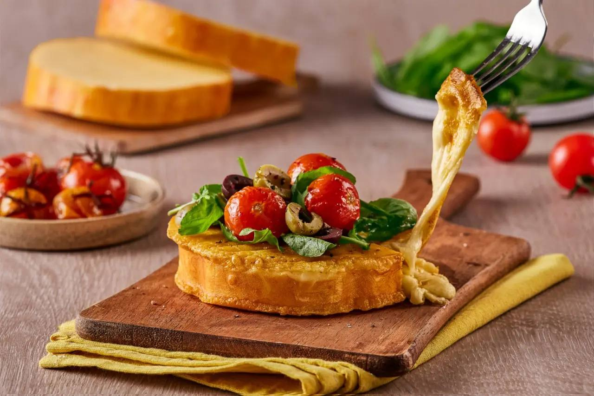
|
Cazuela de Mariscos (Казуела)
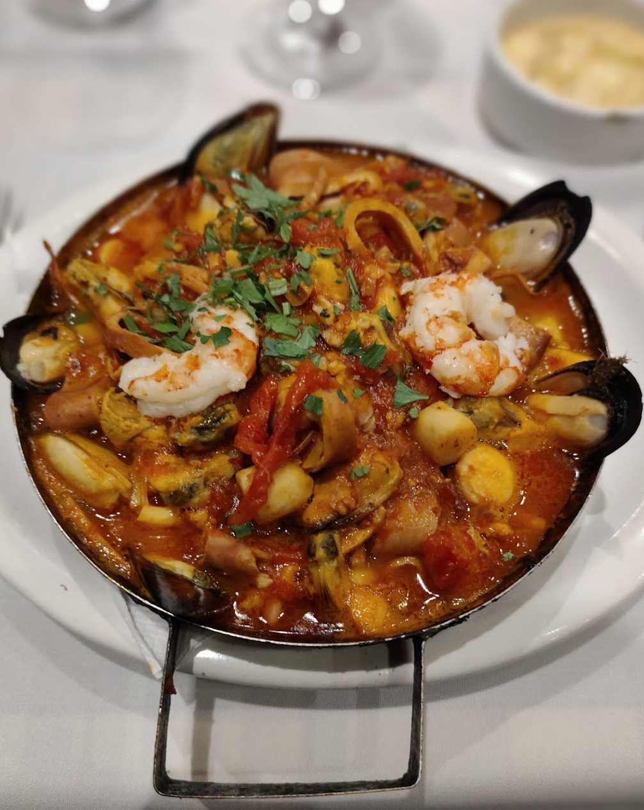
|
Milanesa Napolitana (Миланеса Неополитана)

|
Medialunas (Медиалуны)
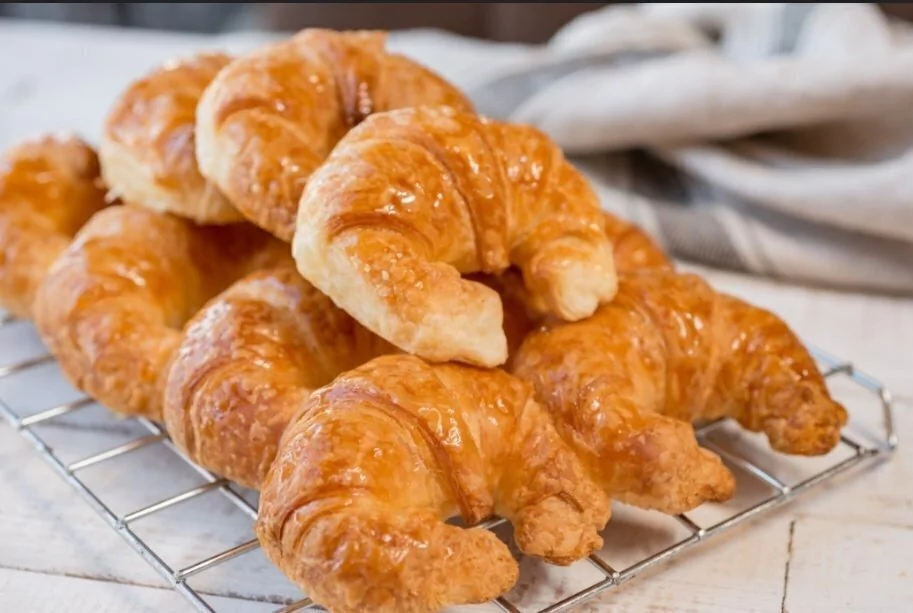
|
Chipá (Чипа)

|
Tacos de Pollo Y Carne

|
Sancocho (Санкочо)
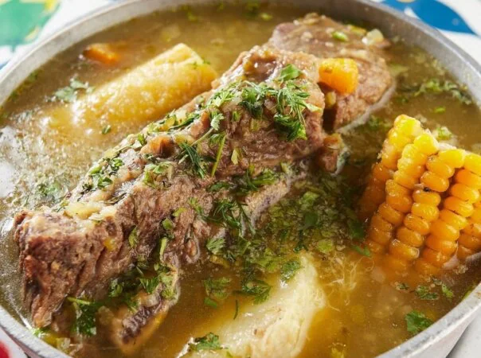
|
Parrillada Para 2 (Паррилада)
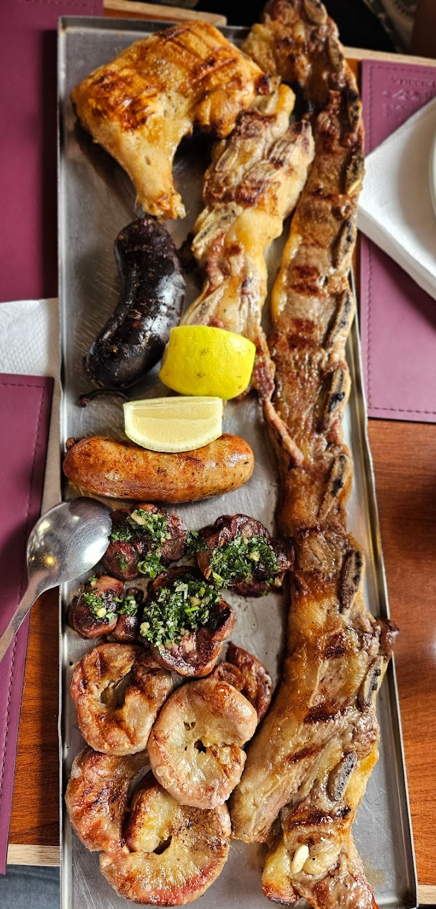
|
Alfajores (Альфахорес)
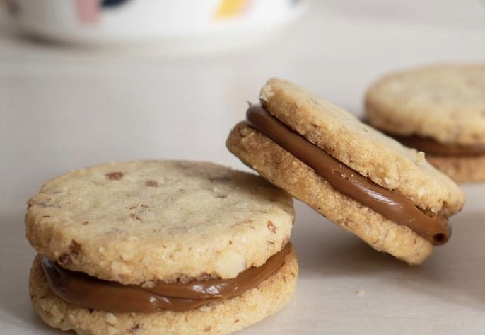
|
|
Sorrentinos de Jamón Y Queso Con Salsa Mixta (Соррентинос)
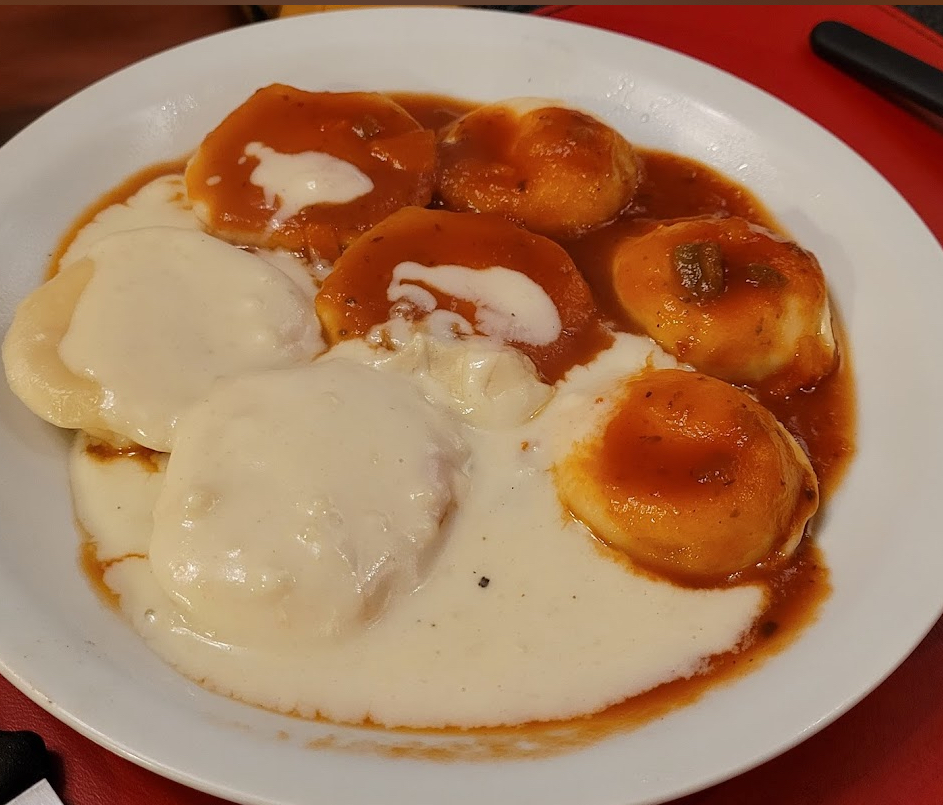
|
Tortilla de papas (Тортилья)
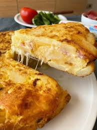
|
Locro criollo
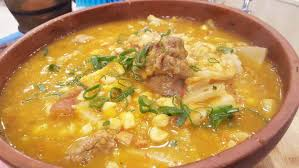
|
Cintas Con Salsa de Mariscos (Синтас)
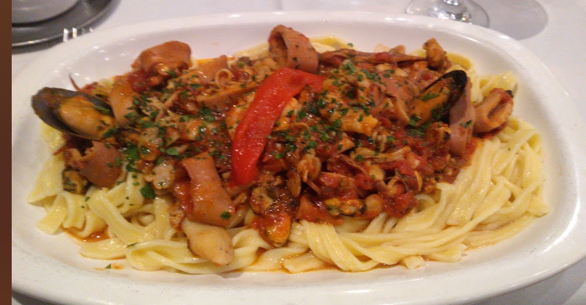
|
Churros (Чуррос)
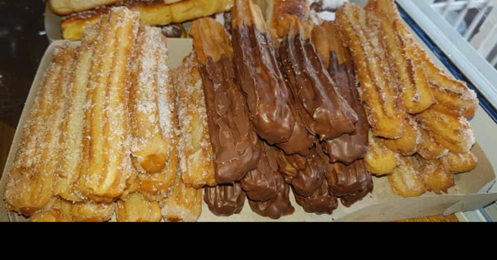
|